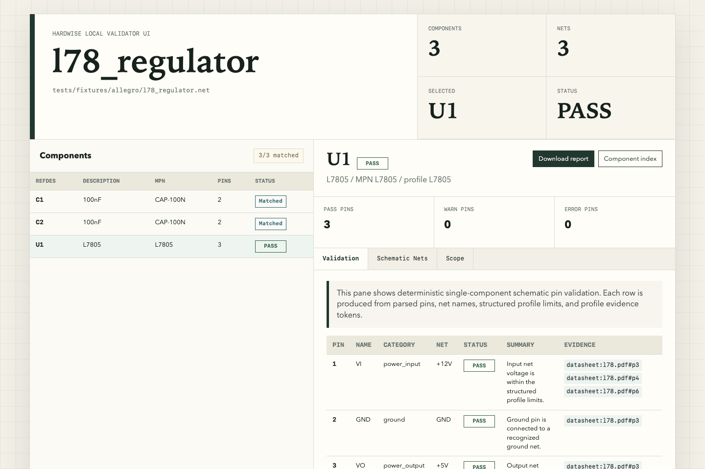

阶段 1：简陋但已经有证据意识
最早的 UI 是一个单器件 validator。它能展示 components、nets、selected、status，也有 pin validation 和 datasheet token，但还需要手动指定 refdes 与 profile，信息架构更像工程调试报告。
- 入口是 `report-validator-ui`，一次只围绕一个器件展开。
- 左侧是 component index，右侧是 U1 的 pin-level 验证表。
- 已经出现防编造项目的核心材料：状态、net、summary、evidence token。
uv run hardwise report-validator-ui ... U1 data/datasheet_profiles/l78.json